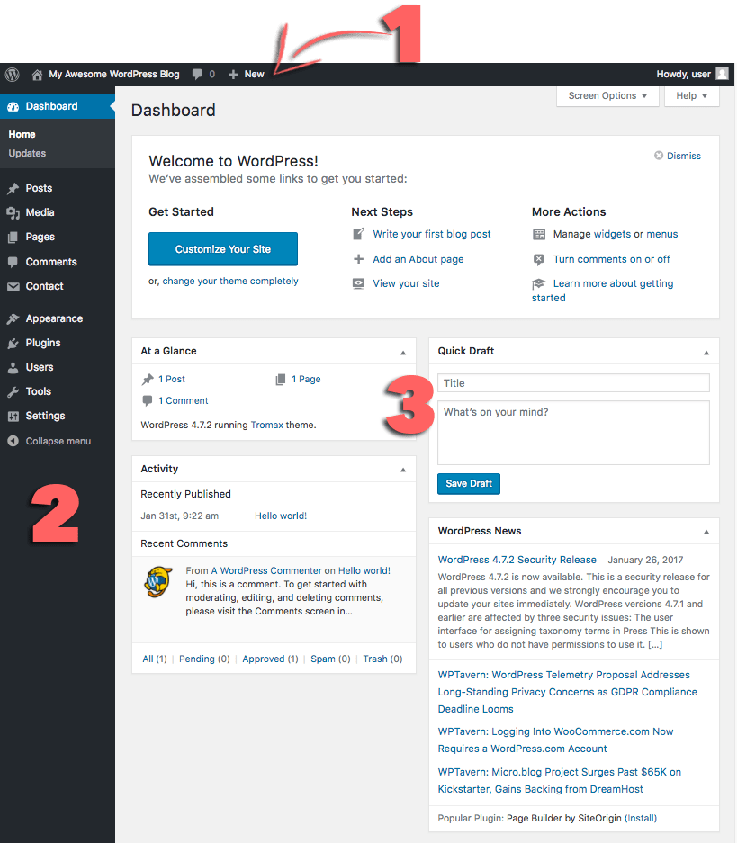

WordPress is the most widely-used Content Management System (CMS) in the world that powers over 75 million websites.
A CMS enables non-technical users to create, modify and publish digital content. In most cases, it also multiple users to work in collaboration.
WordPress has a huge user community with dedicated forums and discussions all over the internet. The amount of data that is available and thousands of WordPress tutorials also make WordPress one of the easiest to use content management systems.
WordPress runs on a programming language named PHP and a database called MySQL.
Every WordPress website has three basic components.
This gives you an overview of your entire website and contains three main sections.
Along the top of the screen, this contains links to the most commonly used administrative functions and resources. For example, if you hover over your website's name, you will get a link to the public view of your site. It also displays simple notifications like updates and new comments count.
On the left-hand side of the screen, this contains links to all administrative screens of WordPress. If you hover over a menu item, a submenu with additional items will be displayed.
This will vary according to your themes and plugins.
Return to Contents.